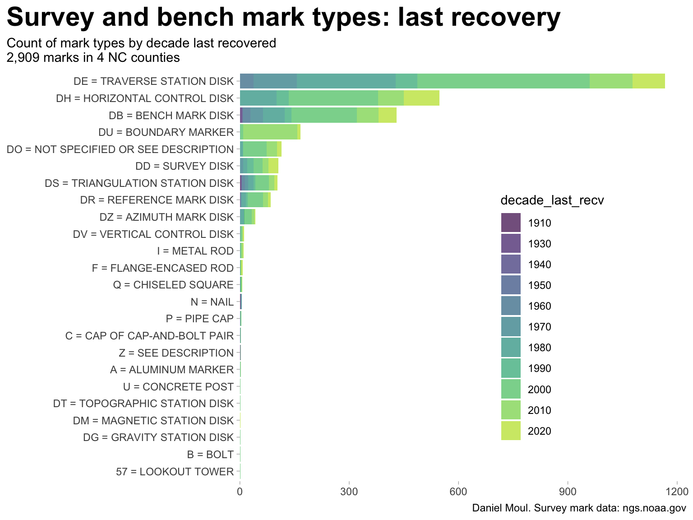

I’m grateful to many organizations and individuals who made this possible. See Section 6.7.
6.2 Summary observations
This document looks at marks in the four counties around Research Triangle Park North Carolina in which most triangle residents live: Wake, Durham, Orange, and Chatham. The NGS database includes 2,909 marks in these counties going back to the 1850s.
Most marks are located near roads (Figure 2.2) rather than being placed due to a geographical feature.
Most common are marks determining horizontal location: Transverse Station Disks (formerly Horizontal Control Disks), Reference Marks, and Boundary Marks. Vertical location marks include Bench Marks and Vertical Control Marks. There are many times more marks focused on horizontal location than elevation (Figure 6.1).
Occasionally marks are “recovered” (checked). A surprising proportion were not found when last sought (Figure 6.2).
datum: “a standard reference point, set of points, or surface from which survey measurements are based.”2 See also “What is a datum?”3. More explanation:
“[a surface] from which ‘zero’ is measured… geoid is a vertical datum tied to mean sea level”4.
NAD 83 is the current horizontal datum for continental North America, and NAVD 88 is the current vertical datum. They are part of the National Spatial Reference System managed by the NGS. In North America, NAD 83 is identical to the World Geodetic System 84 (WGS 84).5
geoid: a “shell” around the earth indicating an imaginary sea level.6 This shell is lumpy due to differences in gravity.7.
6.4 Mark types
In a geodetic context, the terms “survey mark” and “bench mark” are not the same. A bench mark is a specific type of survey mark that has a known elevation above or below an adopted surface or datum. Survey mark refers to any permanent marks or disks placed in the ground or attached to a permanent structure with known latitude, longitude or height information. Other terms used for survey mark are “survey point” or “control point.” Colloquially (and incorrectly) bench mark is used interchangeably with survey mark.8
Below are the most common types of marks, summarized by George Leigh9. Since the counties in focus are well inland I ignore other mark types used to mark high water or at sea.
There may be six or more survey disks in the vicinity of each Triangulation Station…. The main station, marked with a Triangulation Station disk, contains the factory stamping “TRIANGULATION STATION” with an equilateral triangle in the center….Beginning about 1905, an underground mark was set two to four or more feet underground and centered so as to be directly under the surface mark….Standard practice at a Triangulation Station was to also set two Reference Marks and an Azimuth Mark. For a period of time, in the 1970s, underground marks were also set at Azimuth Marks, hence the possible total of six disks. Some sites had additional reference marks added and some sites had marks set by other organizations, so having more than six disks in the area was quite possible.
BENCH MARKS - A Bench Mark is a marked point whose elevation above or below an adopted geodetic vertical datum is known with a certain amount of accuracy.
TRIANGULATION STATIONS - A Triangulation Station is a survey point established during a survey utilizing the triangulation surveying method
REFERENCE MARKS - Reference Marks (RM) were set to assist in locating the Triangulation Station as well as to help determine if the Triangulation Station was undisturbed and in its original position.
AZIMUTH MARKS – Beginning in 1927, a third Reference Mark, or “long RM”, was set about 1⁄4 mile distant from the Triangulation Station for use in providing a starting azimuth (direction) for local surveys. It was also used for determining magnetic declination, which is the difference between true north and magnetic north. Standard Azimuth Mark disks replaced azimuth reference marks about 1935.
MAGNETIC STATIONS – The Survey began magnetic observations in 1843. The original purpose was to supply magnetic information for the nautical charts, but later observations were extended into the interior to aid local surveyors.
GRAVITY STATIONS – The Survey began gravity observations in 1871…. Gravity observations were sometimes also made near the Gravity Station Reference Marks.
GRAVITY STATION REFERENCE MARKS –Gravity Station RM disks were set to indicate the direction to the location of the gravity observations, rather than the direction to a Gravity Station disk.
TOPOGRAPHIC STATIONS - Topographic Station disks were set in preparation for, or during, topographic surveys, i.e. coastal mapping, and also on airports during airport surveys.
TRAVERSE STATIONS – This type of disk was set during traverse surveys, a type of survey that determines positions by means of a series of angles and distances between adjacent points along a route.
USC&GS AND STATE SURVEY DISKS – This type of disk was used when cooperative surveys were conducted with state agencies, and by federal government work programs during the 1930s.
Most marks are traverse station disks (set during traverse surveys) and their replacements, horizontal control marks.10
There are many kinds of marks rarely found in these four counties–though there is one lookout tower (Section 3.11).
Show the code
data_for_plot <- nc_marks_counties |>st_drop_geometry() |>filter(!is.na(last_recv),!is.na(first_recv)) |>mutate(first_recv =as.numeric(str_extract(first_recv, "^[0-9]{4}")),last_recv =as.numeric(str_extract(last_recv, "^[0-9]{4}")) ) |>mutate(decade_first_recv =floor(first_recv /10) *10,decade_last_recv =floor(last_recv /10) *10) |>mutate(decade_last_recv =floor(last_recv /10) *10) |>replace_na(list(setting ="0 = UNSPECIFIED SETTING",marker ="DO = NOT SPECIFIED OR SEE DESCRIPTION")) data_for_plot |>count(decade_last_recv, marker) |>arrange(decade_last_recv) |>mutate(decade_last_recv =as_factor(decade_last_recv),marker =fct_reorder(marker, n, sum) ) |>ggplot(aes(n, marker, fill = decade_last_recv, group = marker)) +geom_col(show.legend =TRUE,alpha =0.7) +scale_x_continuous(expand =expansion(mult =c(0, 0.05))) +scale_fill_viridis_d(end =0.9) +theme(legend.position =c(0.7, 0.4)) +labs(title ="Survey and bench mark types: last recovery",subtitle =glue("Count of mark types by decade last recovered","\n{comma(n_marks_counties)} marks in {n_counties} NC counties"),x =NULL,y =NULL,caption = my_caption )
Warning: A numeric `legend.position` argument in `theme()` was deprecated in ggplot2
3.5.0.
ℹ Please use the `legend.position.inside` argument of `theme()` instead.

Figure 6.1: Survey and bench mark types: last recovery
6.5 Mark condition
Reported mark conditions vary a lot, and a surprising proportion cannot be found.
Show the code
data_for_plot <- nc_marks_counties |>st_drop_geometry() |>filter(!is.na(last_recv)) |>mutate(decade =floor(year(last_recv) /10) *10,last_recv =as.numeric(str_extract(last_recv, "^[0-9]{4}")), ) |>replace_na(list(stability ="UNK",sat_use ="UNK")) %>%mutate(n_cond_in_decade =n() /nrow(.),.by =c(decade, last_cond))p1 <- data_for_plot |>arrange(decade) |>mutate(decade =as_factor(decade),last_cond =fct_rev(last_cond)) |>ggplot(aes(last_recv, last_cond, color = first_recv)) +geom_jitter(size =0.5, alpha =0.4,show.legend =FALSE) +scale_x_continuous(expand =expansion(mult =c(0, 0.05))) +scale_color_viridis_c(end =0.9) +guides(color =guide_legend(override.aes =c(size =3))) +labs(subtitle ="Condition by year last recovered\n(color = year first recovered)",x ="Year last recovered",y ="Condition",tag ="A" )p2 <- data_for_plot |>mutate(last_cond =fct_rev(last_cond)) |>ggplot() +geom_mosaic(aes(x =product(decade), fill = last_cond),alpha =0.7) +scale_x_productlist(labels =c("", "1930", "", "", "", "1970", "1980", "1990", "2000", "2010", "2020")) +# TODO: Can the above approach to labels be generalized?scale_y_continuous(expand =expansion(mult =c(0, 0.05))) +scale_fill_viridis_d(end =0.9,direction =-1) +guides(fill =guide_legend(reverse=TRUE)) +theme(axis.text.y =element_blank(),axis.ticks.y =element_blank()) +labs(subtitle ="Condition by decade last recovered\n(width = relative number recovered)",x ="Decade last recovered",y ="Condition",tag ="b" )p1 + p2 +plot_annotation(title ="Survey mark condition by year last recovered", subtitle =glue("{comma(n_marks_counties)} marks in {n_counties} NC counties"),caption = my_caption )
Figure 6.2: Survey mark condition by year and decade last recovered
6.6 Mark density
Chatham and Orange are much more rural than Wake and Durham and consequently have much lower population density. While the range in population density by area is 12x, the range in mark density by area is only 3x, and the range in mark density by population is 4x (Table 6.1).
Table: Daniel Moul: Source: US Census ACS 2022 and TIGRIS database. Numbers rounded.
6.7 Acknowledgements
Special thanks to CDR George E. Leigh, NOAA Corps (Ret’d.) for his informative history: BOTTLES, POTS, & PANS? – MARKING THE SURVEYS OF THE U.S. COAST & GEODETIC SURVEY AND NOAA.11
Thanks to the National Geodetic Survey, NOAA for making survey mark data so easily accessible.
Thanks to the US Census Bureau for making population and geographical data easily accessible. I accesses this data using the tidycensus and tigris R packages.
Thanks to the many people developing and evolving the high-quality open source R ecosystem for data analysis and visualization.
If you enjoyed this you might enjoy other data analysis reports available at https://dmoul.github.io
Part I: Introduction to Geodetic Survey Markers, and the NGS / USPS Recovery Program by Stf/C Greg Shay, JN-ACN. United States Power Squadrons / America’s Boating Club. Sponsor: USPS Cooperative Charting Committee. Revision 5 - 2020. https://www.usps.org/images/Exec/CoopCh/PDFs/2020_JOG_Part_1_I.pdf↩︎